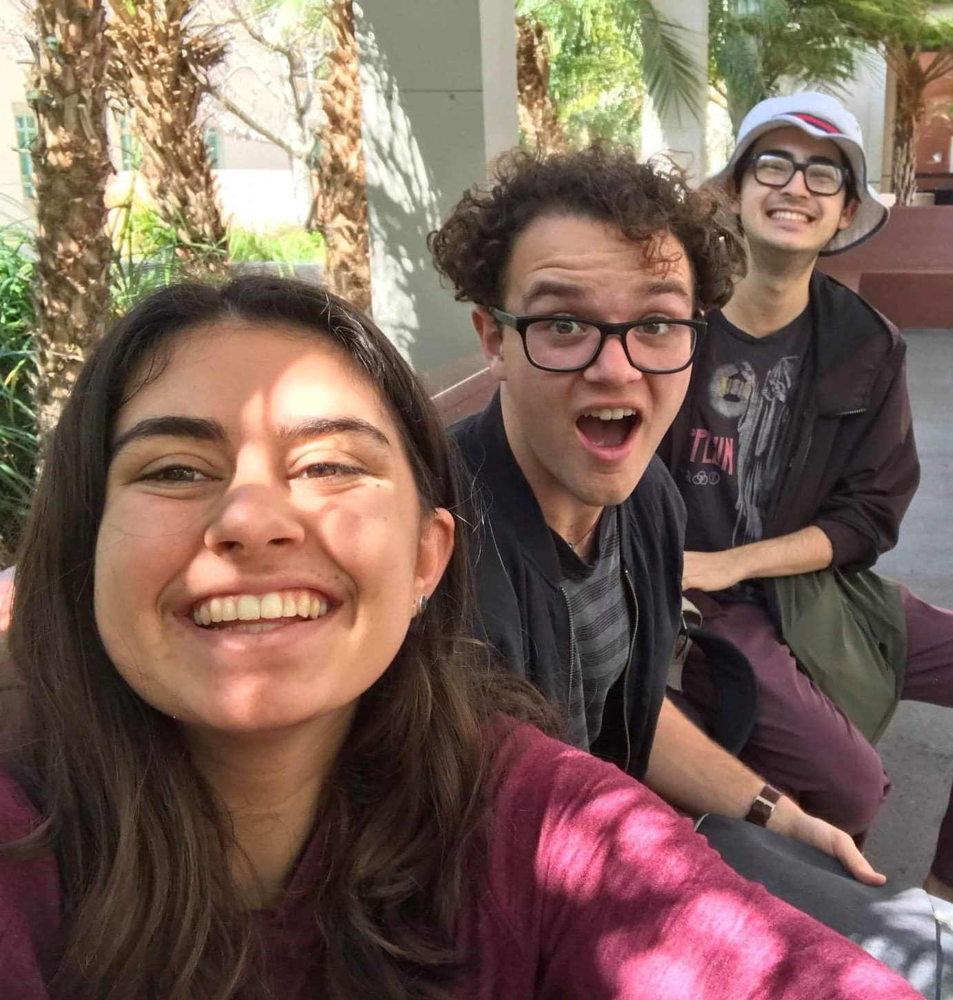
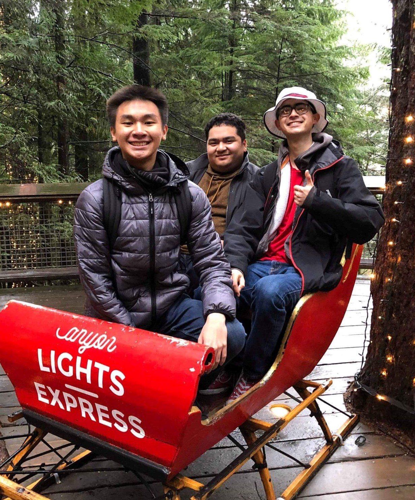
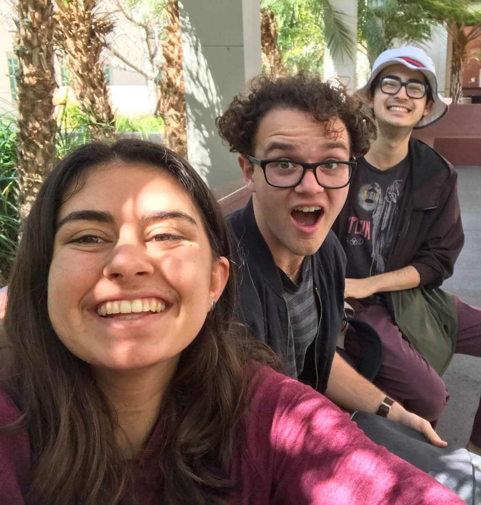
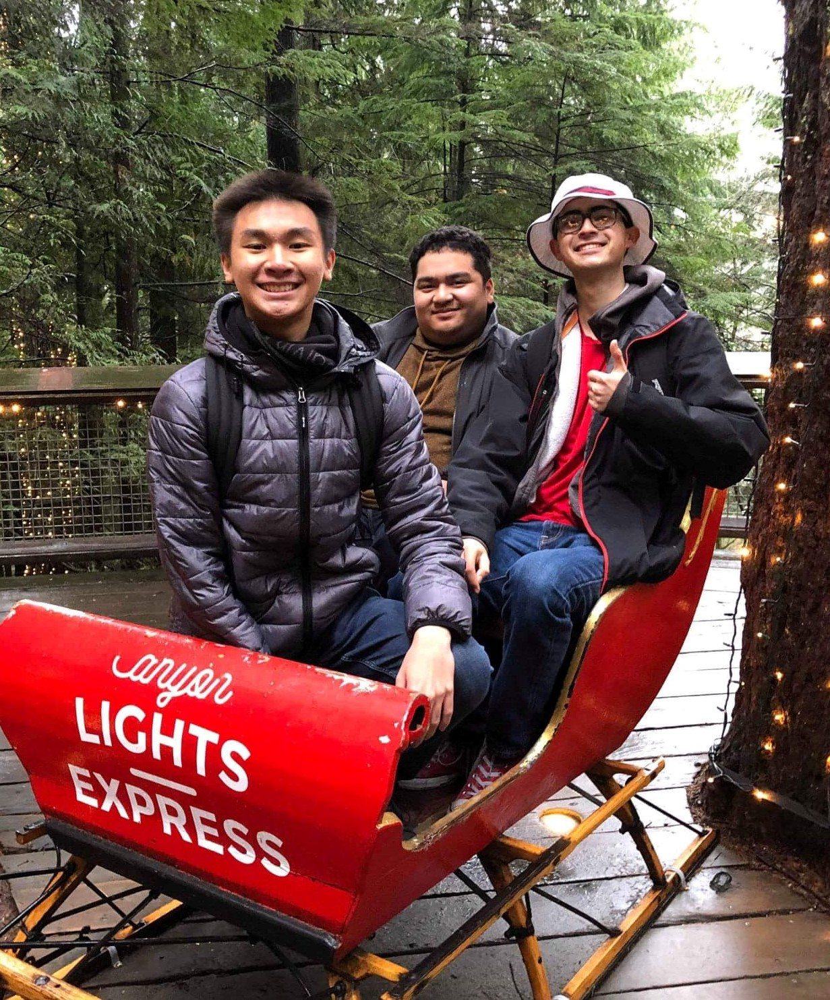

Hi, I am Matt!
I am Economics/Computer Science double major at Pomona College. Though I spend much of my time with school, projects, and work, I try to make time for cohosting my podcast, practicing magic tricks, boxing routines, and playing Dungeons and Dragons. If you're ever unable to find me, just keep an eye out for my bucket hat, and I'm sure you'll find me in no time. I hope you find whatever you're looking for here.
Résumé
Education
Education
Pomona College
August 2018 - May 2022
- 3.91, Intended Major: Economics
Los Alamitos High School
August 2014 - June 2018
- GPA: 4.5, Valedictorian, Principal’s Honor Roll
Work Experience
Work Experience
Macroeconomics Mentor, Pomona College
January 2019 - Present
- Running mentor sessions to help students understand macroeconomic principles
- Grading 25 papers weekly for the entire section
Independently Contracted TA, Eureka Program
June 2020 - August 2020
- Teaching high school students critical thinking and research skills
- Guiding students in developing various research projects about the macroeconomic effects of COVID-19 induced uncertainty
Student Worker, Pomona HPC
March 2020 - May 2020
- Working with LDA Machine Learning tools to create topic models for professors' research
- Writing various Python scripts (pair programming) to assist in data retrieval, cleaning, and processing
Recreation Leader, City of Los Alamitos
April 2016 - February 2020
- Facilitating and organizing events for 35 to 50 kids in the Summer Day Camp program
- Collaborating in groups to set up, run, and tear down for city events
Computer Science Mentor, Pomona College
August 2019 - December 2019
- Aiding students in Intro to Computer Science (Python) labs
- Assessing students’ code on weekly assignments
- Instructing students in various CS principles (recursion, Big O, data structures)
Technical Skills
Technical Skills
| Top Skills | Python | Java | HTML/CSS | MALLET |
| Proficient Skills | Microsoft Office | OCaml | Javascript | Linux |
| Familiar Skills* | LaTeX | Stata |
*Admittedly, I could use some refreshing on these skills, but I have used them numerous times before
Projects
Projects
Economic Uncertainty in India
February 2020 - Present
- Utilizing NLP practices in order to create and analyze a measure of firm-level uncertainty following India's 2016 demonitization event
- Skills: Python, MALLET, Linux
- Group Project for Acadmic Research
Darwin Game
January 2020 - February 2020
- Creating a Darwin simulator that ran a turn based ecosystem of deterministic "creatures"
- Developing a team creature to battle other teams' creatures in a competition after completion of the simulator (Our creature won)
- Skills: Java
- Paired Programming Project for CS
Economies of Scale in School Districts: Student-to-School Effect on Graduation Rates
September 2019 - December 2019
- Utilizing econometric models and techniques to find a causal relationship between Student-to-School Ratios and Graduation Rates on the district level
- Skills: Python, Stata
- Singular Person Project for Econometrics
NASDAQ Dividend Records Web Scraper
August 22, 2019
- Scripting a web scraper that took dividend payment records from the NASDAQ site to find companies exhibiting dividend growth
- Skills: Python
- Singular Person Project for Fun
Airbnd Multi-hosting Analysis
April 2019 - May 2019
- Parsing and plotting data from Airbnb listing records to see developments of hosts with multiple listings
- Skills: Python
- Singular Person Project for CS
Relavent Coursework
Relavent Coursework
- CS54: Discrete Mathematics and Functional Programming
- CS62: Data Structures and Advanced Programming
- MATH60: Linear Algebra
- ECON102: Microeconomic Theory
- ECON107: Econometrics